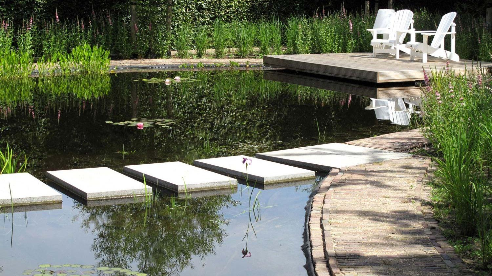
Geen standaard tuin.
Dat is de wens die ik het vaakst hoor. Ik ben Marijn Vereijken, tuinarchitect in Lent, en ik ontwerp tuinen die passen bij jouw huis, jouw plek en jou. Van eerste schets tot aanleg.
Een helder plan dat toch verrast.
Elke tuinsituatie is anders, dus elk ontwerp ook. Of het nu om een stadstuin gaat of een tuin in het buitengebied: ze zijn eigentijds, met een ruimtelijke opbouw die helder is maar weet te verrassen.
Beplanting is daarbij geen opvulling. Planten bepalen in belangrijke mate de sfeer van een tuin. Ze kunnen betoveren en er wat magie aan toevoegen. Mijn ontwerpen putten uit drie bronnen.
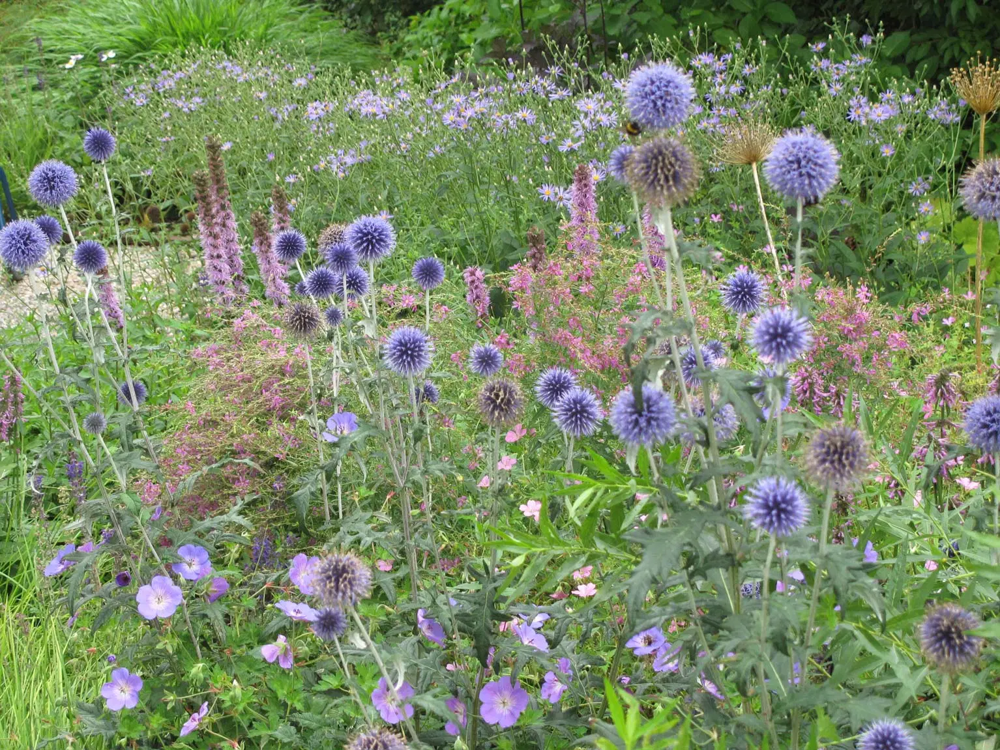
Wilde, natuurlijke beplanting
Ik trad in het vak toen Piet Oudolf, Coen Jansen en Hans Kramer nieuwe, wilder ogende planten kweekten. Daar komt mijn plantenkennis vandaan: graag ontwerp ik een Oudolf-achtige tuin of een onderhoudsvriendelijke, kleurrijke prairietuin.
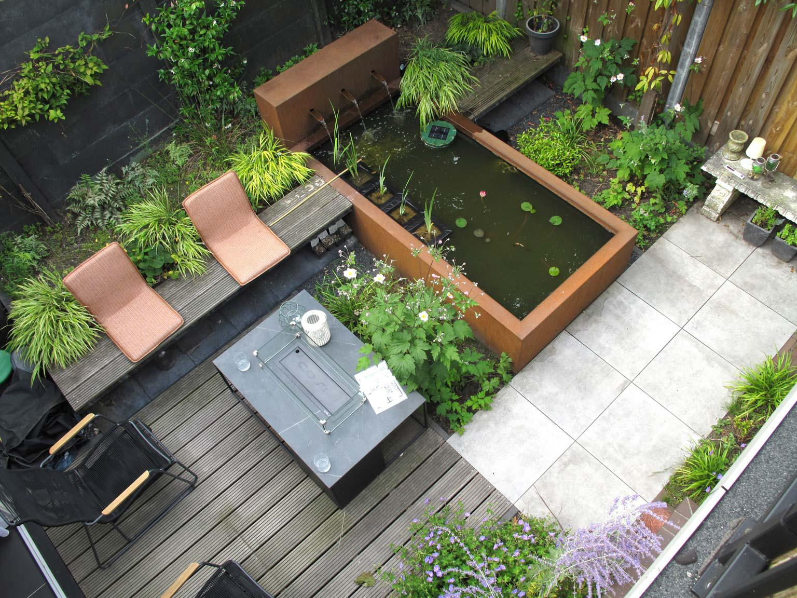
De Japanse tuin
Om de rijke symboliek, de verstilling en het water. Hier begon het voor mij ook: staand in een vijver van de Japanse tuin Arnoldshof in Wijchen.
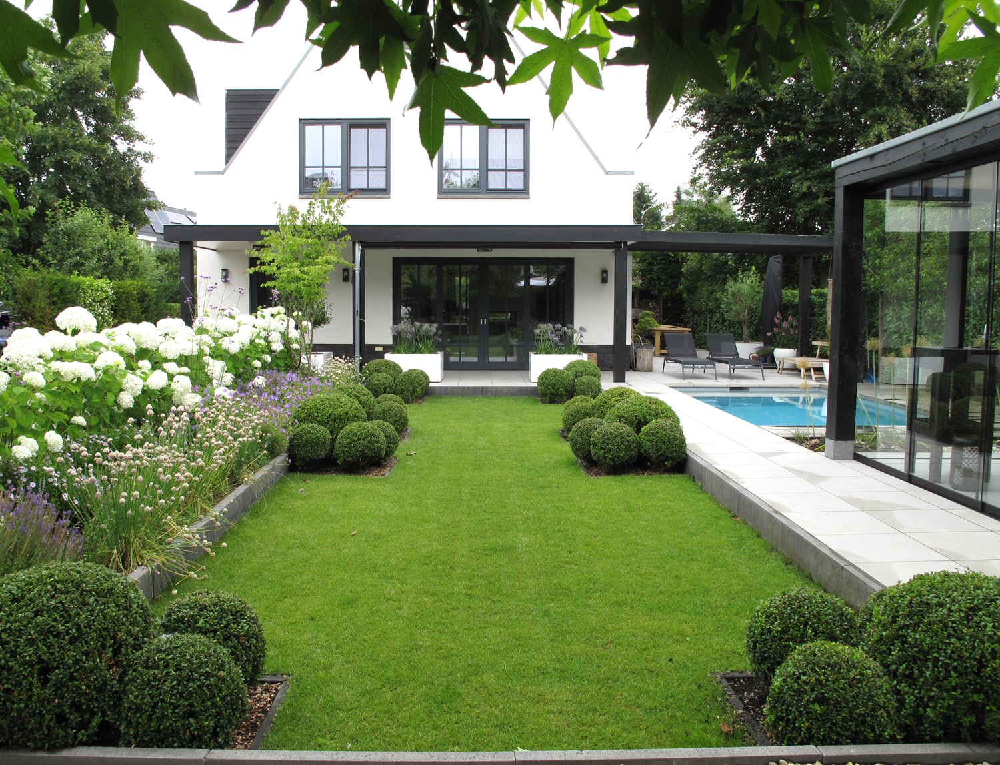
De kloostertuin
Om de beslotenheid en de manier waarop gebouw en tuin samensmelten. Een tuin die voelt als verlengstuk van je huis.
Twee soorten tuinen, één handschrift.
Stadstuin
30 tot 1000 m²
In de stad of het dorp is elke meter kostbaar. Met slimme zichtlijnen en weelderig groen ontstaan privacy en ruimte. Een rustpunt als verlengstuk van je woning.
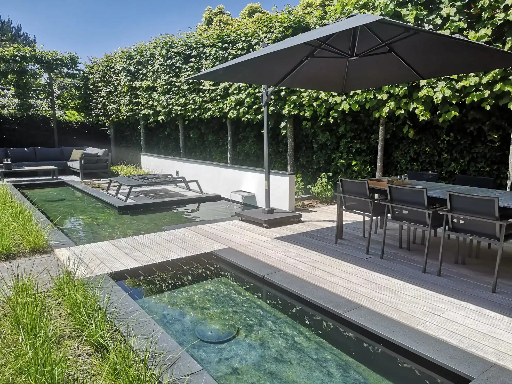
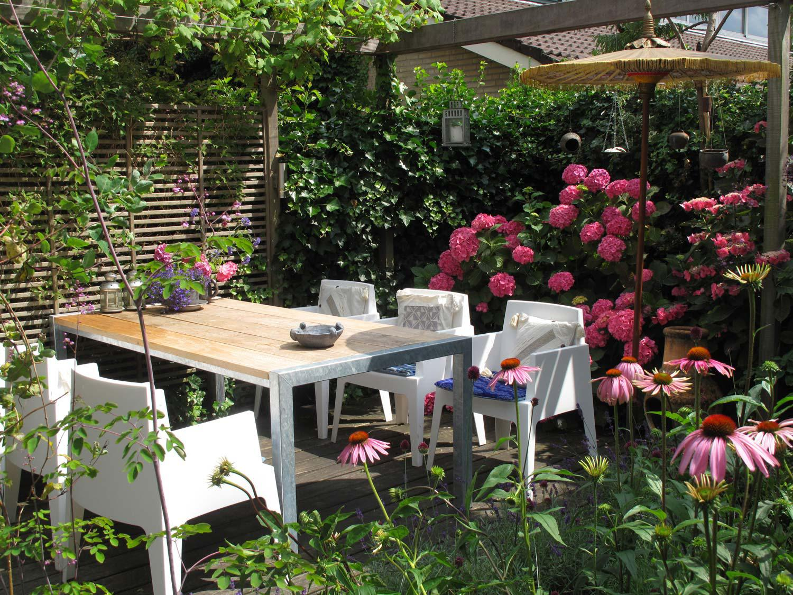
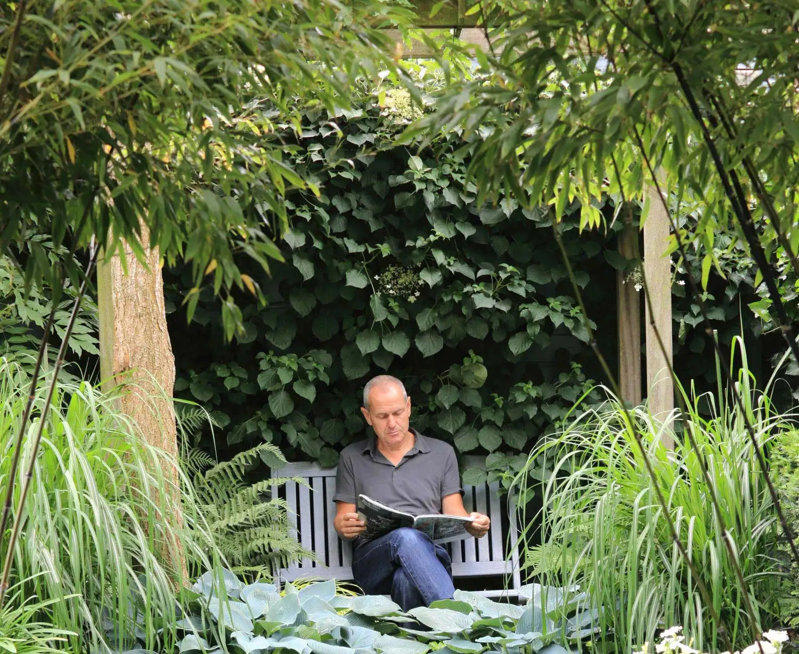
Landschapstuin
Groter dan 1000 m²
In het buitengebied of aan de rand van het dorp zoek ik de verbinding met het landschap. De grenzen vervagen, het ontwerp loopt over in de natuur erachter en er is ruimte voor grote gebaren.
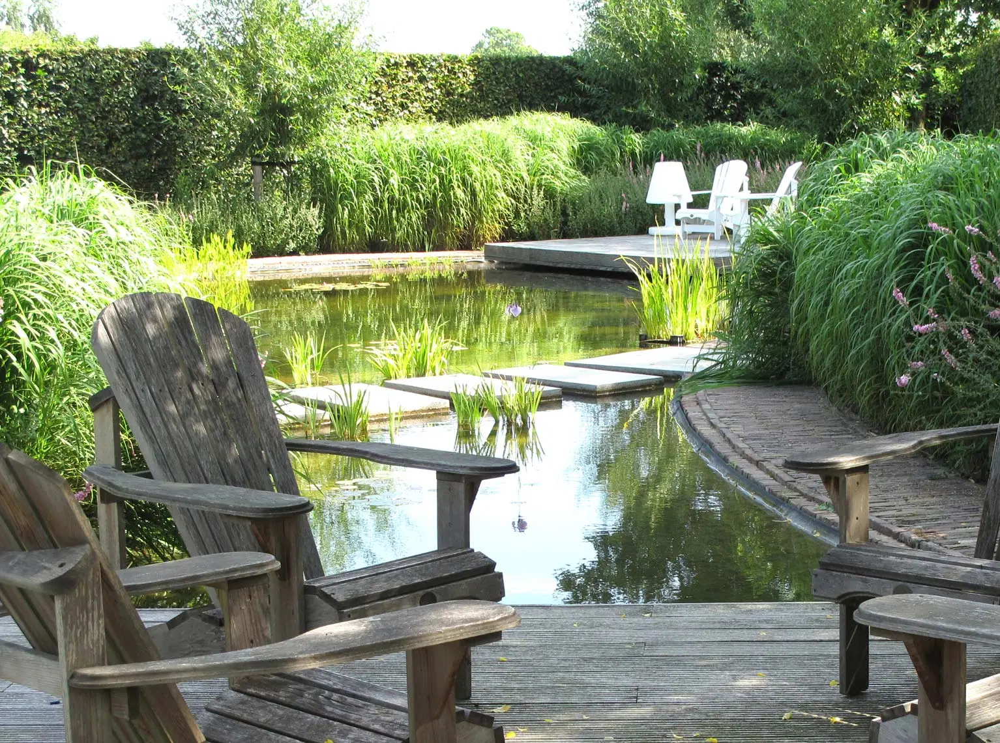
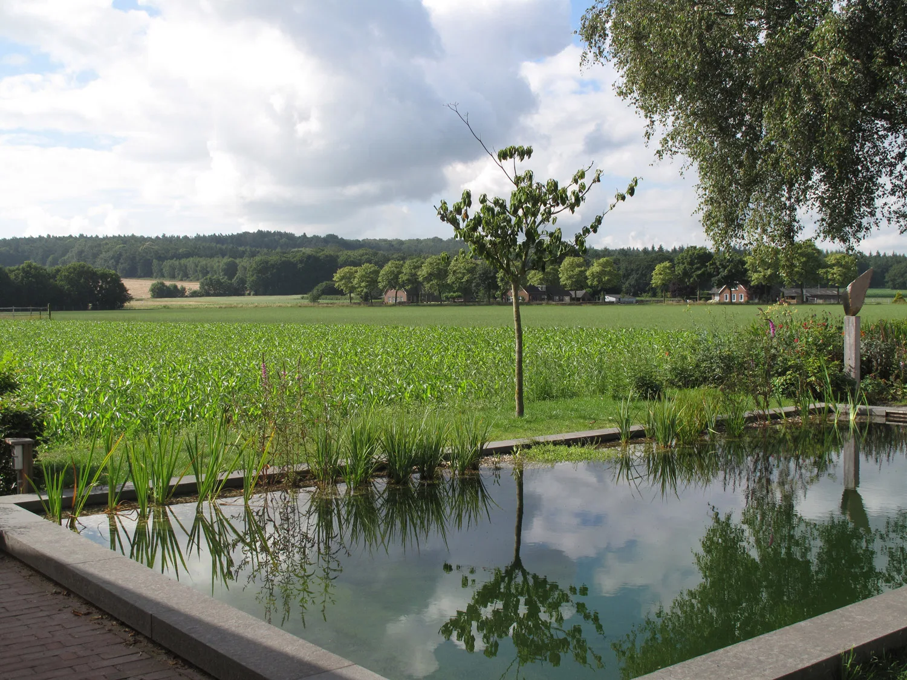
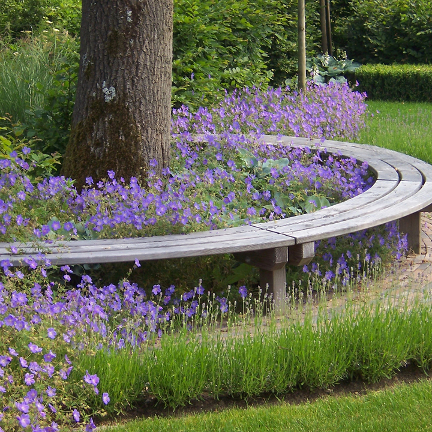
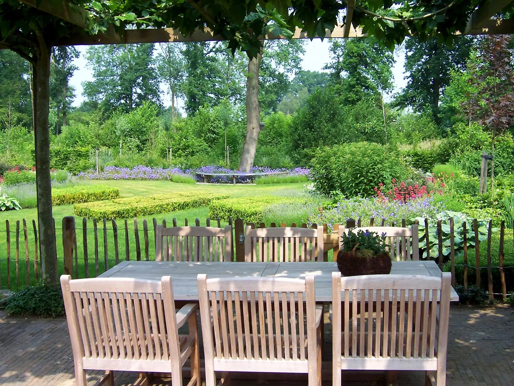
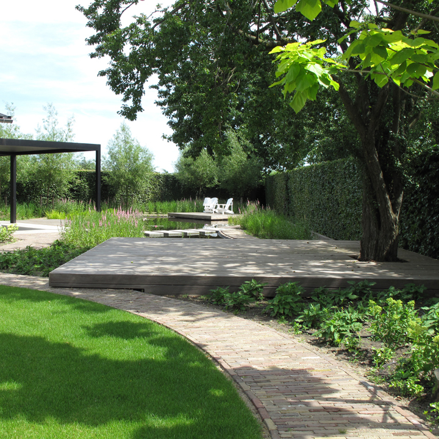
Van schets tot aanleg.
Je kiest zelf hoe diep we gaan: een snelle schets als richting, of een volledig ontwerp als je alles goed wilt doordenken voordat er een schop de grond in gaat.
-
Tuinschets
Een laagdrempelige start: een duidelijke indeling en beplantingsadvies in één heldere schets. Later uit te breiden naar een volledig ontwerp.
-
Volledig tuinontwerp
Het uitgebreidste traject: van analyse en schetsfase tot een uitgewerkt plan, met advies over materialen en stijl.
-
3D-tuinontwerp
Licht, hoogteverschillen, materialen en beplanting worden voelbaar. Je vergelijkt eenvoudig varianten en kiest met vertrouwen.
-
Beplantingsontwerp
Sterke combinaties die het hele jaar interessant zijn, met aandacht voor biodiversiteit en praktische onderhoudstips.
-
Tuinaanleg
Met ervaren hoveniers uit mijn netwerk, met regie op detail. Eén aanspreekpunt van ontwerp tot oplevering.
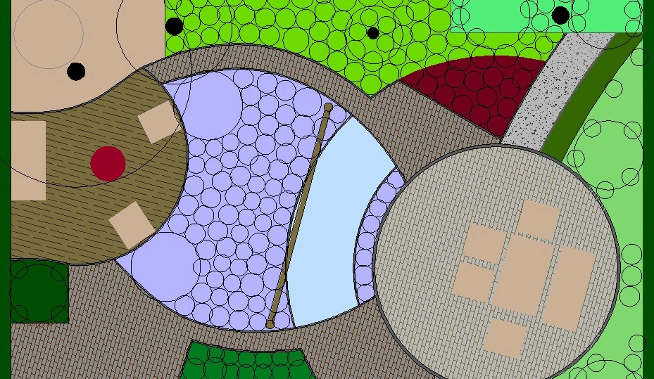
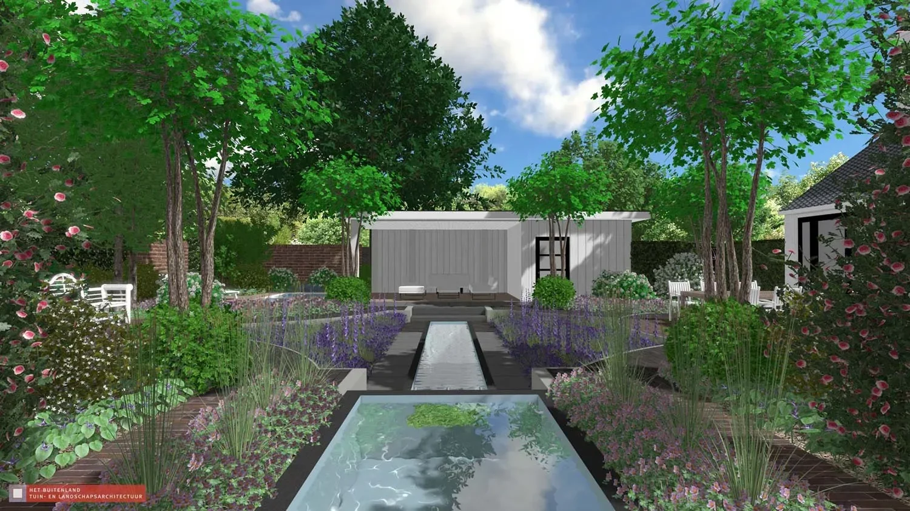
Zo starten we
-
1
Aanvraag
Je belt of mailt met je vraag. Stuur gerust meteen foto's en globale maten mee.
-
2
Inventarisatie
Je krijgt per mail een vragenlijst over je wensen en je situatie.
-
3
Offerte op maat
Op basis van je antwoorden ontvang je een passende offerte voor het ontwerp.
-
4
Locatiebezoek
Na akkoord kom ik langs om de tuin te bekijken, en dan gaan we van start.
Wat opdrachtgevers zeggen.
4,9 uit 24 reviews op Google
“Marijn is er perfect in geslaagd om mijn (onmogelijk gedachte) wensen tóch te realiseren. Fantastische tuin gekregen met grote vijver, vlonders en terrassen. De borders zijn afwisselend kleurrijk en ingetogen en de zichtlijnen zijn vanuit alle hoeken heel erg mooi.”
“We hebben Marijn laatst voor de tweede keer gevraagd voor onze tuin. Hij voelt alweer gelijk aan wat wij willen en maakt een eerste tekening die helemaal klopt. Top! Een verrassend en snel resultaat.”
“Enorm blij en content met het uiteindelijke plan! Wij hebben een grote lange tuin met veel hoogtes en Marijn wist hier wel raad mee!! Marijn heeft verstand van zaken en veel ervaring. Hij luistert en sluit aan bij je wensen en past deze toe. Hij weet zelf ook wat leuk en passend is. Ook kwa budget denkt Marijn mee.”
“Na onze verhuizing hadden wij een prachtig huis, maar een tuin die op de een of andere manier niet klopte. We hadden wel wat wensen, maar hoe alles precies te veranderen vonden we moeilijk om zelf te bepalen. Marijn heeft goed naar onze wensen geluisterd en een tuin ontworpen die helemaal past bij de architectuur van ...”
“Na een minder positieve ervaring met een ontwerp van een lokale tuinder (onvoldoende kwaliteit) kwamen wij "in het buitenland" Marijn tegen. Hij heeft goed geluisterd naar onze wensen en in zijn ontwerp rekening gehouden met de opgelegde regels vanuit de gemeente. De tuin is slechts een paar jaar oud, maar nu al ...”
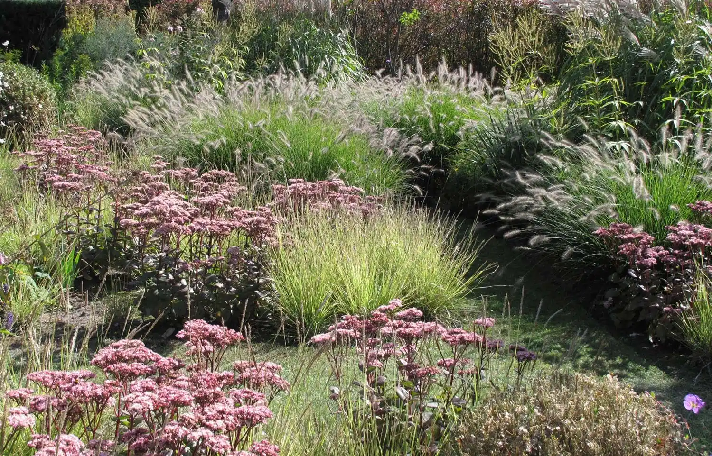
De vlam ontbrandde in het water.
Gek genoeg, staand in een vijver in de Japanse tuin Arnoldshof in Wijchen. De verstilde sfeer, het toverachtige beeld en de symboliek troffen me als een bliksemschicht.
Ik ging landschapsarchitectuur studeren aan de Landbouwuniversiteit in Wageningen en werkte tegelijk met mijn handen, in tuinaanleg en onderhoud. Later was ik vijf jaar docent tuinontwerp en plantenkennis en leidde ik studenten op tot tuindesigner.
Ik won prijsvragen voor de duurzame woonwijk De Akkers in Helmond en voor het parkontwerp Welinkbos in Dinxperlo. Voor de aanleg werk ik samen met een netwerk van specialisten.
Gepubliceerd in
- Art of Living: Zwemmen in de Laagtefotografie Patrick Meis
- Tuinontwerpen, Modeste Herwig: Jungle2024
- Ontwerpen en planten voor kleine tuinen, Modeste Herwig: Jungle en Mozaïek2016, 2023
- Homes & Gardens (VK): Measured Response2015
- Tuin & Landschap, Groei & Bloei, Bloemen & Planten2013
- Home & Garden: Nieuw tuintalent2006
Vertel me over je tuin.
Bel voor een vrijblijvende kennismaking, of mail je wensen met een paar foto's en de globale maten van je tuin. Dan weet ik meteen waar we het over hebben.
- Adres
- Vrouwe Udasingel 220
6663 GW Lent (Nijmegen) - Bereikbaar
- Maandag tot en met zondag, 09:00 tot 17:00
- Werkgebied
- Nijmegen en omstreken, zoals Malden, Elst, Arnhem en Oosterbeek, maar ook de Betuwe, de Gelderse rivierenstreek en tot in de Achterhoek. Woon je verder weg? Neem gerust contact op.